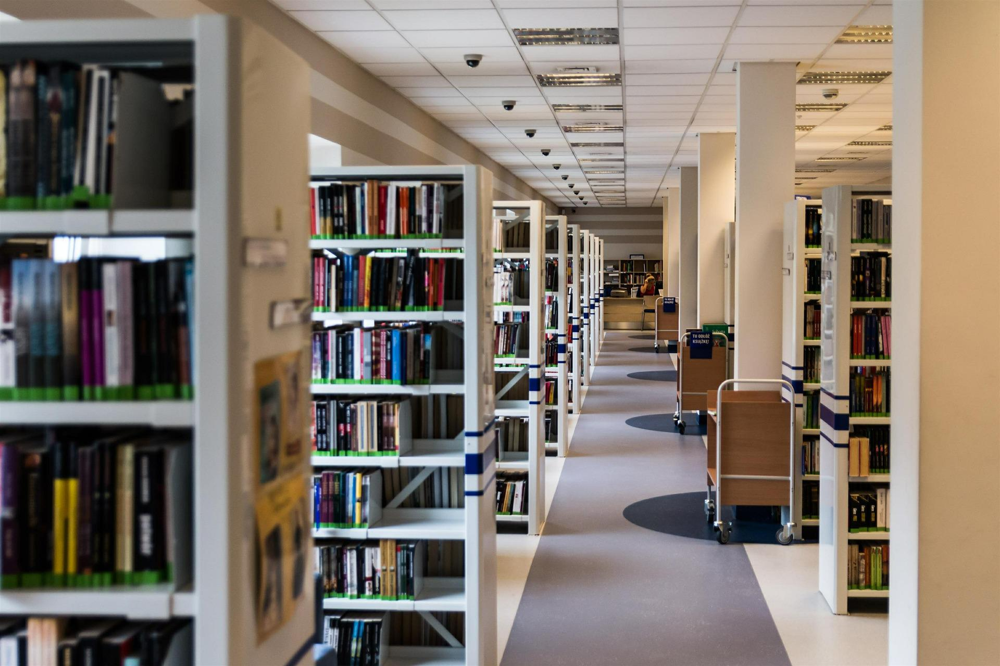

Selamat Datang di Perpustakaan Annisa!
"Selamat datang di Perpustakaan Annisa! Sebagai bagian dari upaya pengembangan ilmu dan pendidikan, perpustakaan ini hadir untuk memberikan berbagai sumber referensi yang dapat mendukung pembelajaran, penelitian, dan eksplorasi akademik. Kami percaya bahwa pengetahuan adalah kunci utama untuk membuka peluang masa depan yang lebih cerah. Semoga Anda menemukan manfaat dari setiap informasi yang tersedia di sini!"